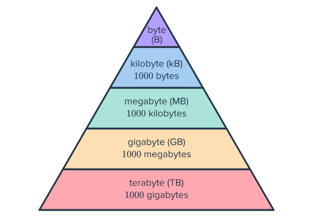

Bits & Bytes
Digitisation
Digital information is represented using a binary system made up of zeros and ones. Digitisation is the process of converting information into digital form through methods such as scanning, encoding and recording. We can digitise documents and books by scanning them and saving the files onto a USB drive, allowing us to transfer the information to other compatible devices.
We can digitise sound and store it in audio formats such as MP3 or WAV. Videos can also be stored digitally using formats such as MP4. Both audio and video files are represented using binary data made up of zeros and ones.
What are Bits and Bytes
Computers use binary code. Binary code is made up of ones and zeroes called bits. Eight bits make up one byte. Digital infomation sutch as text, images and sound, is stored using bytes. Character encoding systems such as ASCII are used to assign numerical values to letters, numbers and symbols. However, some Unicode characters require multiple bytes (which depends on the character encoding system). Images can also be stored in binary, with each pixels colour being stored as binary data
Digital storage and File Sizes
There are different ways to measure digital storage. 1,000 bytes are equvelent to 1 kilobyte. 1,000,000 bytes are equivelent to 1 megabyte. 1,000,000,000 bytes are equivelent to 1 gigabyte. 1,000,000,000,000 bytes are equivelent to 1 terabyte. 1,000,000,000,000,000 bytes are equivalent to a petabyte. However, the size of a digital file can vary depending on its contents, formatting and file type. For example, a Word document containing text and images will generally require more storage than a simple text
A standard blank word document named "Test" is made up of 13,294 bytes (which i tested), and it is the equivelent to the population of the Toorak suburb in Melbourne!
Binary Messages
Computers use binary to represent letters, numbers and symbols. Each character is assigned a numerical value using a character encoding system such as ASCII or Unicode. The computer stored these values in binary.
Here is a message written in binary:
01001000 01100101 01101100 01101100 01101111 00101110 00100000 01110100 01101000 01101001 01110011 00100000 01110011 01101001 01110100 01100101 00100000 01101001 01110011 00100000 01101101 01100001 01100100 01100101 00100000 01100010 01111001 00100000 01000001 01101100 01100101 01111000 00100000 01100001 01101110 01100100 00100000 01000001 01110110 01101001 01101110 01101111 01101111 01110010 00100001
In ASCII, This Translates to:
Hello. This site is made by Alex and Avinoor!
How Digital Information Travels
A fibre optic cable is a high-speed networking line made of thin glass or plastic threads that transmit data using pulses of light. A Fibre optic cable provides a much higher data speed than coper telephone cable, however this depends on on the connection, equipment and internet service being used. You can also deliver information through cloud services. You can recieve information from satellities by using Internet boxes and phones. The information super highway is a 1990s term used to describe the telecommunications infrastructure
Future Predictions!
Here are 3 things you may be able to do with digital communications in the next 20 years:
1. Interact via Full-Presence Holographic Communication
2. Communicate Mentally via Brain-Computer Interfaces
3. Experience Haptic-Enhanced Virtual Reality
